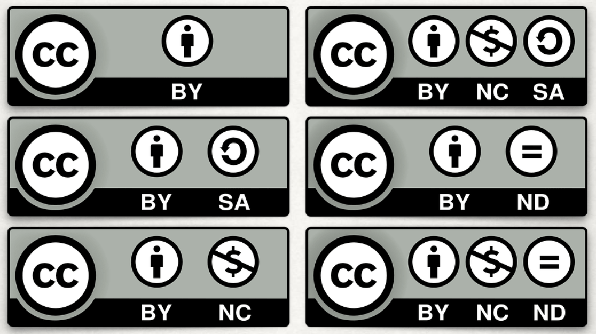

Creative Commons
Creative commons er en måde at lade andre bruge dine værker, det udspringer af kunst-kulturen.
Det er et ønske om at værker kan deles, på andre vilkår end med copyright.
Creative commons bruges når copyright er for begrænsende.
Metoder
Der er 6 forskellige metoder indenfor Creative Commons
- By: Navn på indehaver
- BY+SA: navn på indehaver og man må lave videre på, men skal udgives under samme licens
- By+NC: Navn på indehaver og andre må bruge det men ikke tjene på det
- By+Nc+Sa: navn, laves om men skal udgives under samme licens og må ikke tjenes på.
- By+Nd: navn, andre må kopiere og bruge det men ikke ændre og arbejde videre på det.
- By+Nc+Nd: navn, andre må kopiere og bruge, men må ikke ændre, arbejde videre eller tjene på det.

Eksempler
- By: Chris Zabriskie.com – Giver sin musik væk og man må gerne tjene på det
- By+Sa: Wikipedia og Wikipedia commons
- By+ND: Behance
- By+Nc+Nd: Ted Talks
- By+Nc+Sa: Jonathanworth.org – fotograf
- By+Nc: Jonathancoulton.com – musiker giver musik gratis men man mp ikke tjene på hans musik.